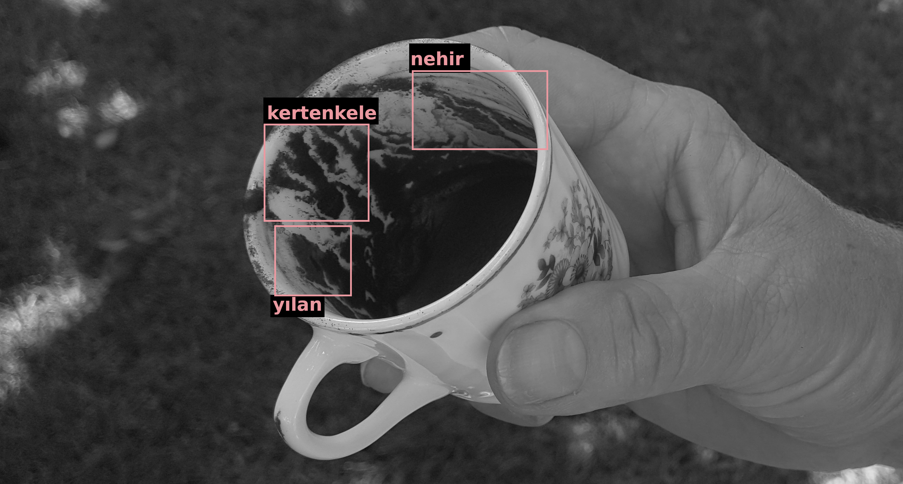

Fotoğrafını yükle, sanal zeka ve makine öğrenimi yardımıyla falına baktır.
Nasıl Çalışır?
- Önce resimde kupa veya fincan var mı bakılır. Diğer uygulamaların aksine sanal zeka kül tablasına göre fal bakmaz.
- Daha sonra kahve izleri ayrıştırılır.
- Son olarak özel bir nesne algılama modeli çalıştırılır.
